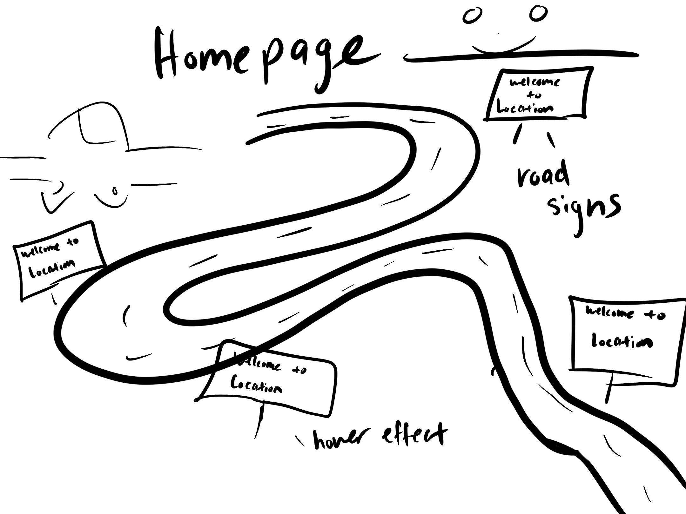
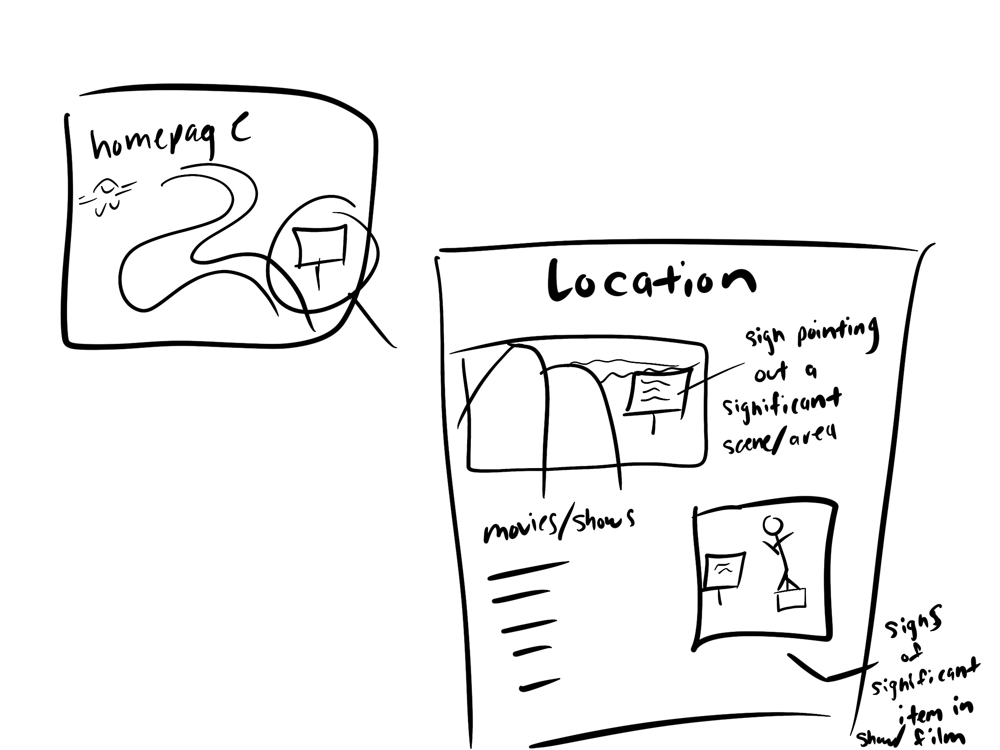
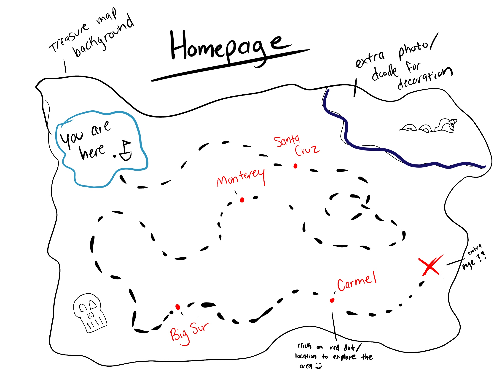
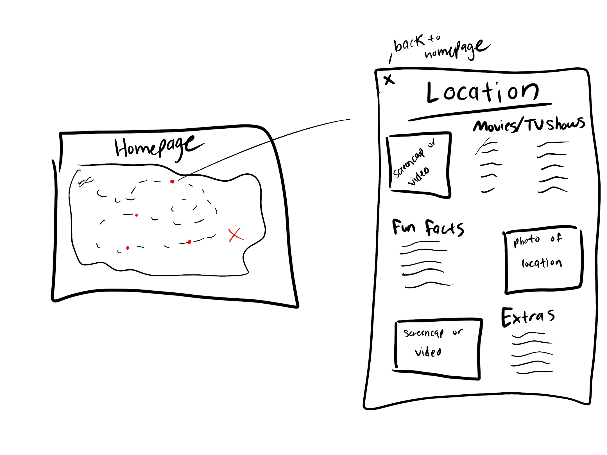
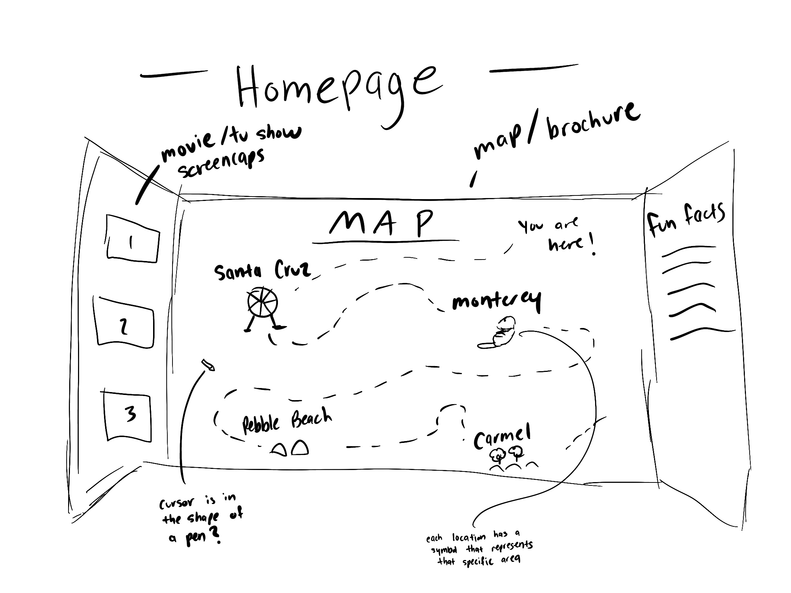
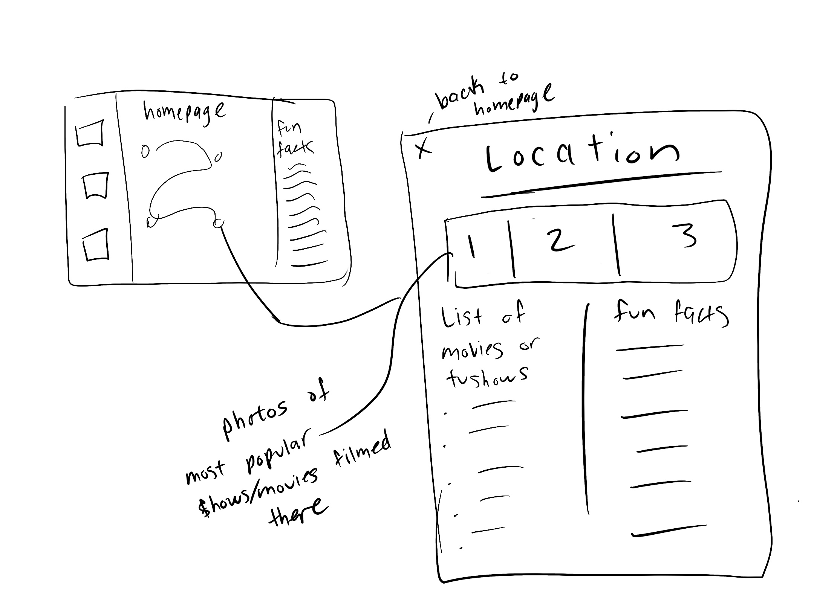

Challenge
The challenge for this assignment is to choose the top 3 sketch ideas and create a more in depth
sketch to each of them. We are to add call outs (if needed), as well as any other details that are
necesarry for our sketches.
Problems
I feel as though my sketches were pretty self-explanatory, so I didn't add too many callouts or details.
I'm also still playing around with some ideas because my team and I are still unsure of what we wanted
or what we 100% liked, so I still kept mine pretty open for interpretation or any additional details
that we want to add in the future. It was a bit difficult trying to fully go in-depth and create
a drawing when you and your team are still a bit unsure of what we want and are stuck on
ideas.
Final Result
My team and I had pretty similar ideas, but also extremely different ways of portraying each one.
It was really interesting seeing all of our rough sketches and it was really fun talking about our different
ideas and what we can do to make it better.
Project Idea 1


For this first idea, my team members suggested changing the roadsigns from being a hover effect that
transitioned into a little information page to a whole new page. When the user clicks the roadsign, it'll take
them to a new page that is dedicated to that specific location. FOr the photo, we will use a location that
is in a movie/show, and the add another sign onto the photo to help the user locate the specific item/background
that was featured in that film/show!
Project Idea 2


For the second idea, I focused more on a little treasure map. At first, I wasn't sure how to portray
the location, but my group helped me decide certain details. They all agreed that they enjoyed the ragged edges of
the map, but they stated that it looked a bit plain and that we should add some extra drawings around the map to give
a more realistic feel to the site. They also said that instead of icons, the locations can just be marked by a red dot
or circle that the user can click on!
Project Idea 3


For the third idea, my team suggested that instead of having a little map, I should try to add a
bit more definition and a different vibe to my original drawing. I originally just had icons with lines leading
to one another, but then I changed the background to be a brochure. It's inspired by the treasure map idea,
and since my team had similar drawins to the treasure map, I wanted to switch it up a bit and did a tourist brochure of
Monterey/Santa Cruz area instead. My team also agreed that the icons should be icons the location rather than
symbols in the film/show to signify what that location is known for!